PHASE 0 · CYLINDER 15 × 20 cm · FOUR PANELS × FIVE LEVELS
Rows: white, R/G checker, mosaic, grid. Columns: 0 / 5 / 10 / 10.4 / 15 cm of water. pbrt-v4, 512 spp.
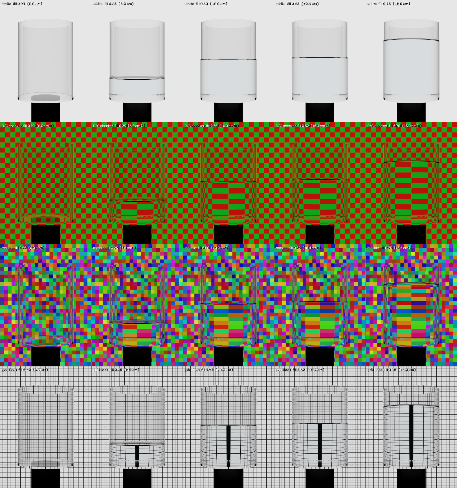
LEVEL LINE AT 100 %
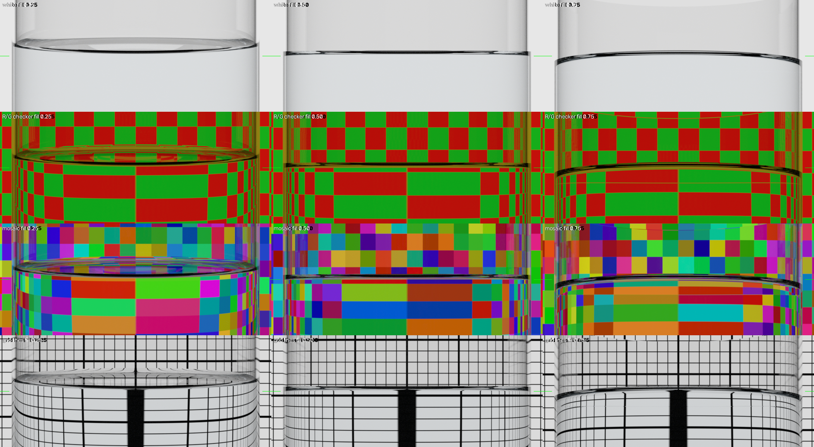
SENSITIVITY TO A 4 mm LEVEL CHANGE, WITH MONTE-CARLO NOISE FLOOR
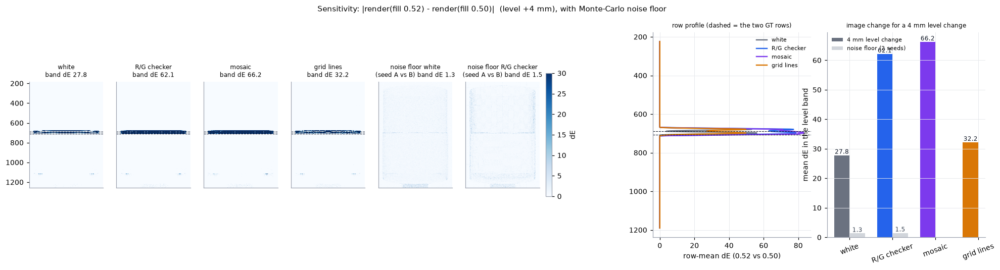
HOW MUCH OF THE WHITE-PANEL VISIBILITY IS THE MENISCUS
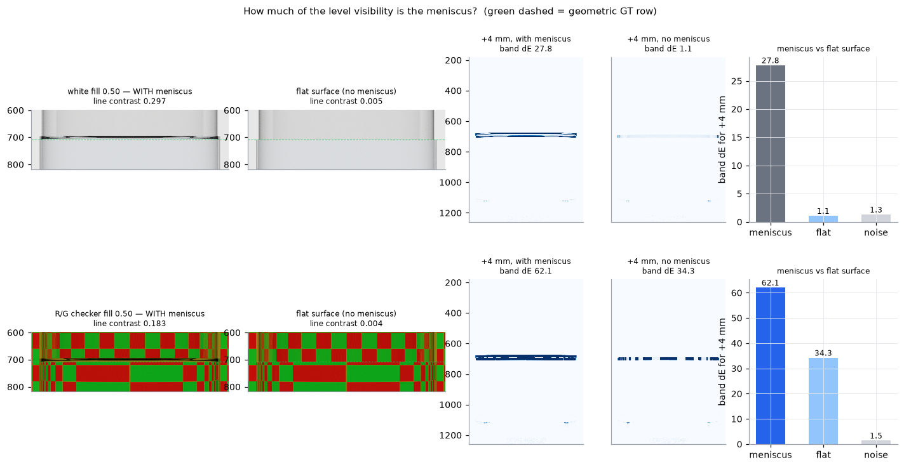
RENDER vs INDEPENDENT 2-D RAY TRACE
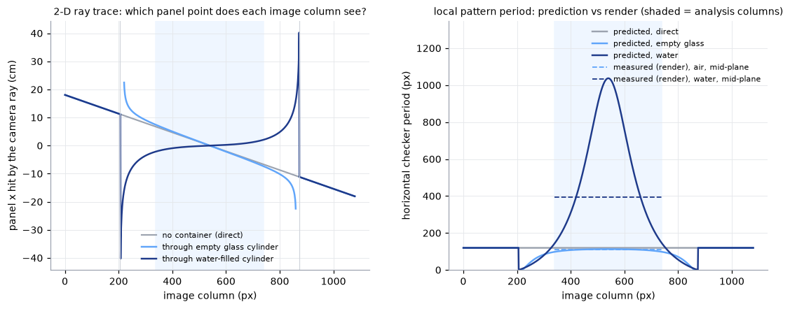
PHASE 1 · VESSELS, LENSES, LAYERED LIQUIDS (baseline | compare)
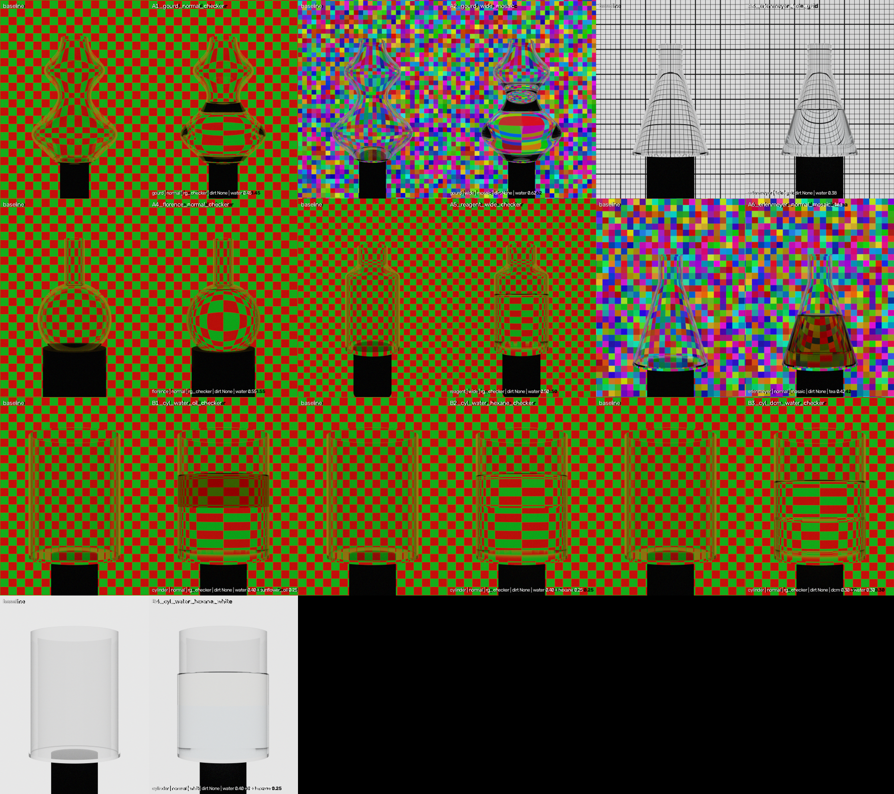
WATER / n-HEXANE INTERFACE: MAGNIFICATION PROFILE FINDS THE Δn = 0.04 BOUNDARY
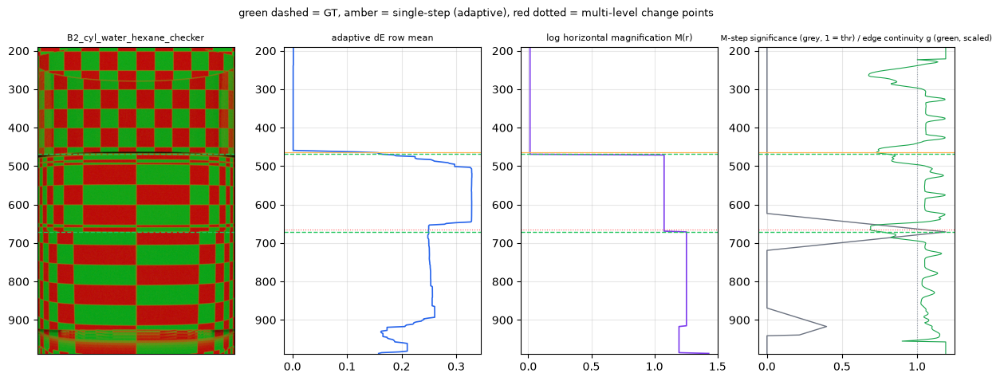
DETECTOR v3 (GEOMETRY FIRST) ON LIMESCALE CASES — green dashed = ground truth, red dotted = detected
Left to right: filled frame, photometric row difference (the old primary), per-row log horizontal magnification (the warp), jump significance z. Deposits change only the photometry, so the warp stays on its plateau through them; the level is the row where the warp jumps, anchored at the end of the identity plateau and the dark contact line. S2: tide marks and streaks above a 30 % level. V5: dense tide-mark band 40–60 % with the level inside it. V6: inclined deposit line crossing the level on a gourd flask.
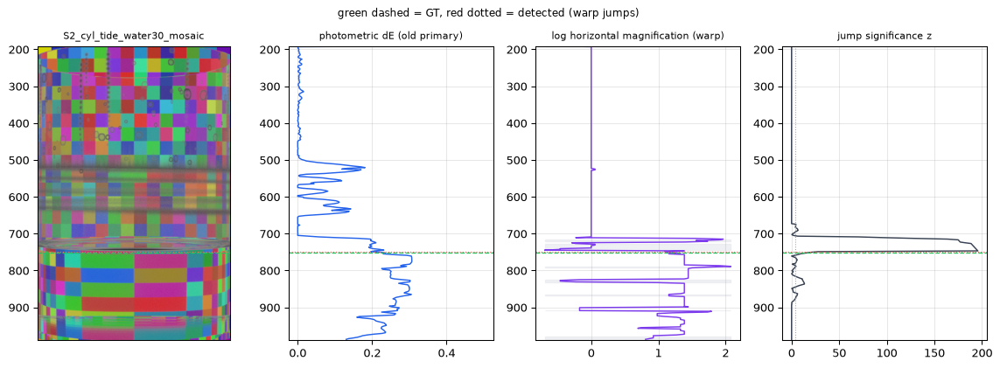
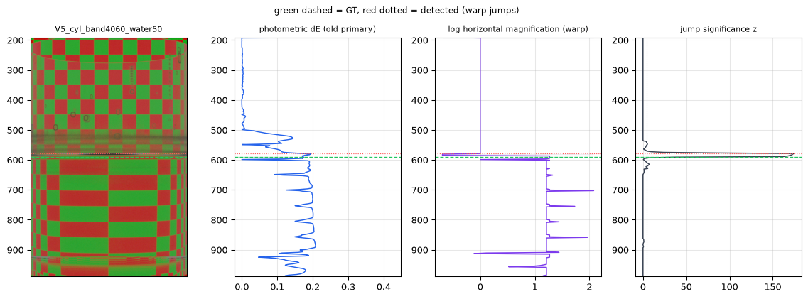
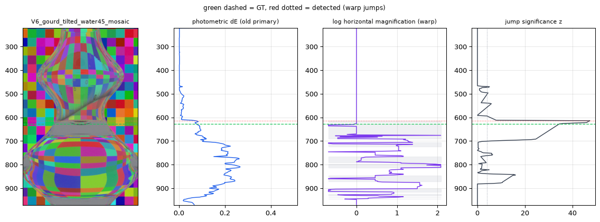
LIMESCALE DEPOSITS (physically motivated model; baseline dry | filled, submerged part index-matched)
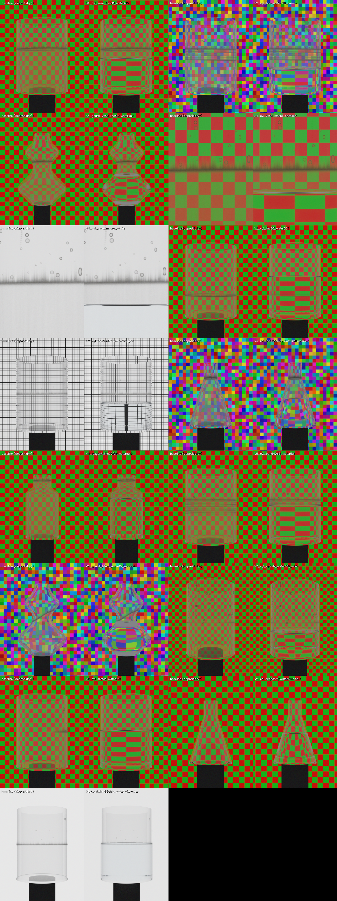
FIXTURES THAT PARTLY OCCLUDE THE PATTERN (baseline with fixtures | filled)
Stainless stirrer shaft with blade, glass thermometer, PTFE dosing tube (inserted for the filled frame only in R2), Erlenmeyer with an off-axis rod, two liquids behind the shaft. The detector treats occluders as unchanged or unmeasurable columns; levels are found within 1–2 pt except the Erlenmeyer + grid case, whose panel distance sits near 2f (horizontal magnification ≈ 1).
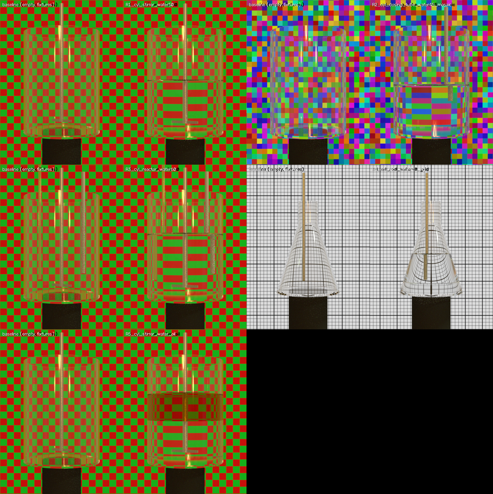
LABORATORY ENVIRONMENT LIGHT (Poly Haven "childrens_hospital", CC0) AND THE K GROUP: STEEL FIXTURE + LIMESCALE
The HDRI replaces the constant ambient term: the ceiling lamp and the white walls appear as reflections on the steel rods and the glass; the filled frame has the room light rotated by 12° and dimmed by 15 %. Reagent bottle with a stirrer rod and tide marks; gourd flask with a rod, a thermometer and a water-line ring. Levels within 1–3 pt. Under the same light the water/oil interface of R5 is lost: the lamp reflection on the front wall swamps the strongly magnified water layer, identical in both frames, and biases its warp to identity.
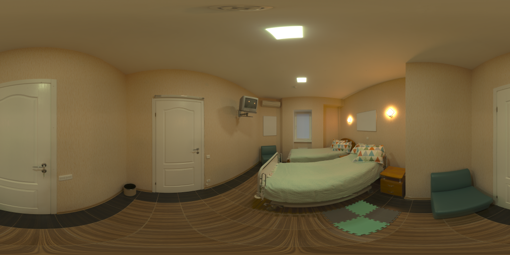
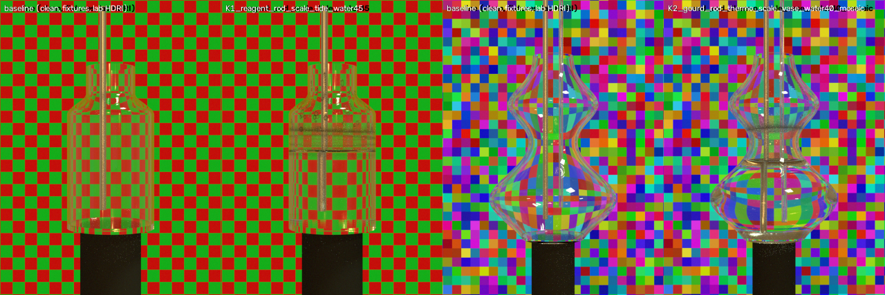
POURING SEQUENCES · 20 fps · 4 s (baseline, then five frames; lab HDRI)
F1 cylinder, level 12 → 55 %. F2 Erlenmeyer with a heavy water-line ring at 75 % and a PTFE dosing tube through the neck; F3 wide-mouth reagent bottle with tide-mark limescale and a dosing tube; both 15 → 55 % with the room light rotated 12° and dimmed 15 % against the baseline. The deposit is dry above the level and index-matched where submerged, so it changes frame by frame as the level rises. Every frame is analysed independently against the empty-vessel baseline (dots), then a causal multi-hypothesis tracker follows the surface hypothesis consistent with a constant-velocity prediction (line); dashed green is the ground truth. Seen from above, a cone shows a wide dark surface band below the far rim and its tilted wall breaks the per-row horizontal-warp model; the front rim is now taken where that band crosses back to the air level, which brought the Erlenmeyer's per-frame median error from +2.5 to below 1 point.
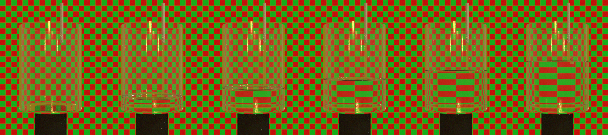
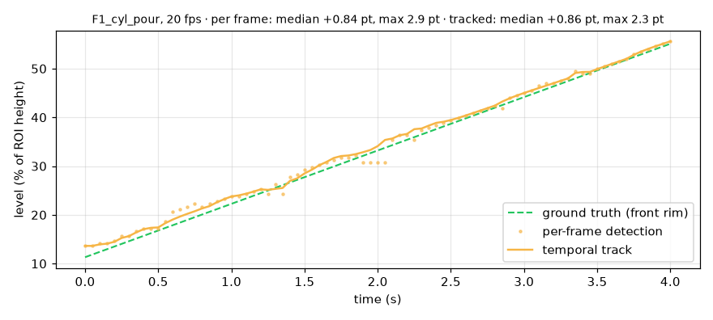
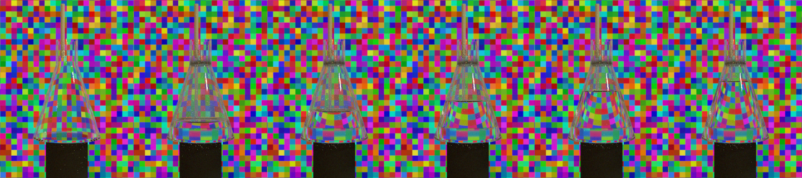
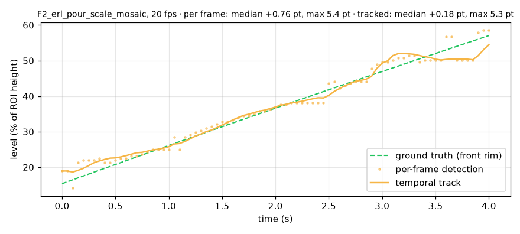
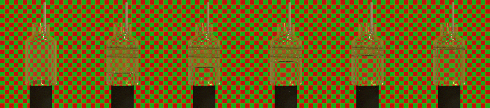
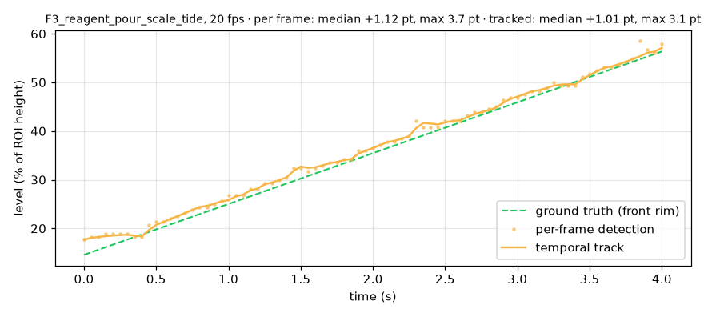
REAL FOOTAGE · GLASS TUMBLER · BACKLIT CHECKER PANEL (phone on a tripod, room lights off)
Left: the photo pair P1, empty and filled to about three quarters, cropped to the same portrait window (white box = analysis region). Right: the pouring video P2, 28 s of the pour sampled at 4 frames per second and played back at 20 fps; baseline = the empty tumbler before the stream starts. No ground truth. Real footage forced two detector changes: a cap on the change-noise floor (droplets, mist and exposure drift otherwise switch the whole region to "unchanged") and a stricter haze rule (a periodic checker magnified by the liquid still correlates with itself). Two limits remain: the periodic checker (an aperiodic mosaic is the better pattern for real tests) and camera drift — the phone refocused between the shots and drifted about 8 px during the pour, beyond the ±6 px alignment search, so the last frames read low.
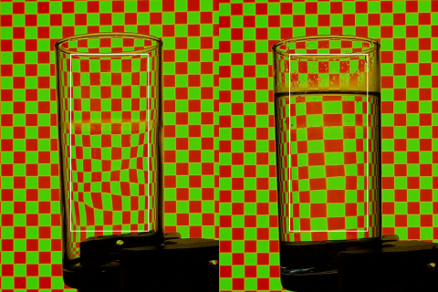
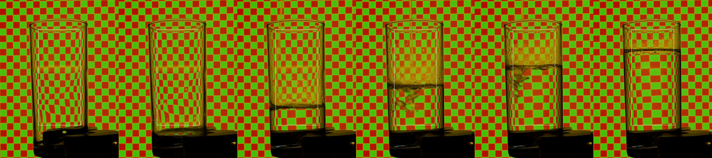
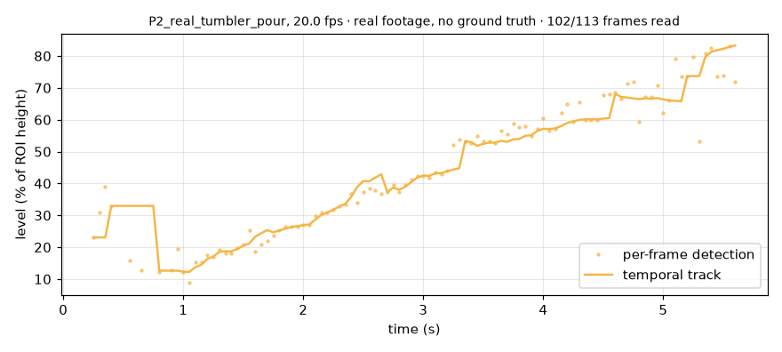
WATER-LINE RING, MACRO, WHITE PANEL
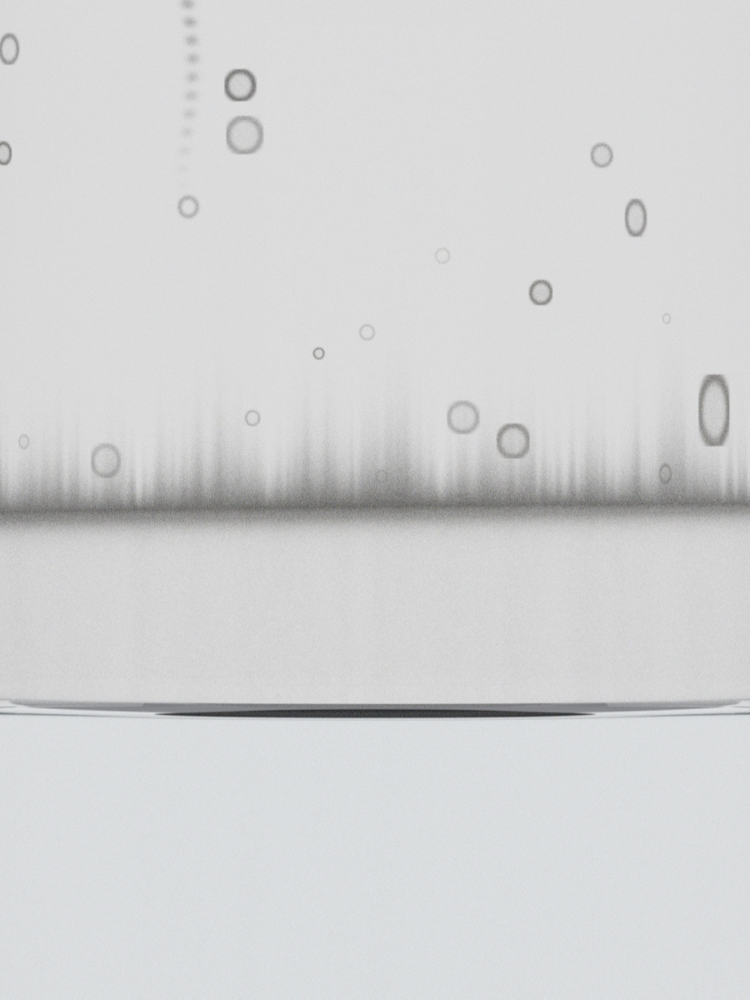